Go to minecraft.py and run the code. What do you see? You should see a loading screen that looks like this:

After the loading is done a GUI will pop up prompting you to click the screen with a random background. When you click the screen you will see the controls menu to show you the controls click "PLAY" and select your gamemode. Click RTX OFF we will use RTX ON later. Once you have done that you are in the game. Here is an image what the game will look like:
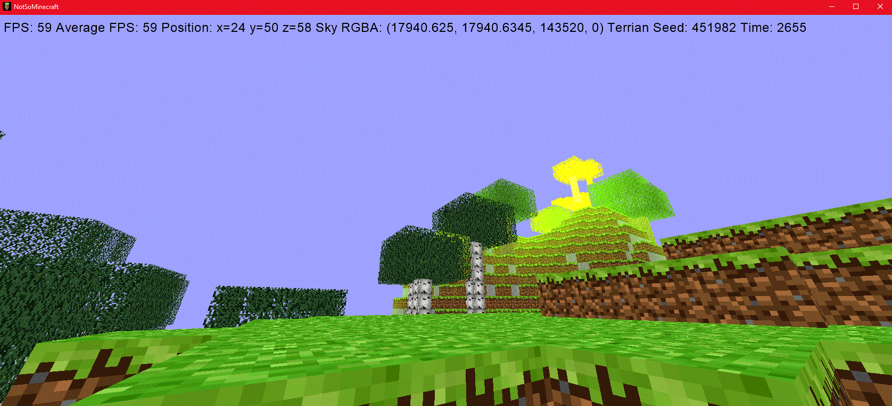Yours may look a little different then mine because of different FPS, Average FPS, Position, Sky RGBA, Terrian Seed and Time. Exit the game by pressing ESC and click the close button on the application. Go to the code for minecraft.py. You should see this:
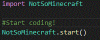Instead of the title on every Minecraft window be "NotSoMinecraft" lets change the title.
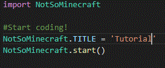And here is the result:
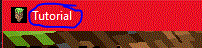I want to change the biom of the terrian to the dessert. To do this we need to change the terrian seed to do it. Terrian seeds 12 to 14 are dessert bioms, so lets edit the terrian seed in our code. I am going to choose terrian seed 12, you can choose 12 to 14.
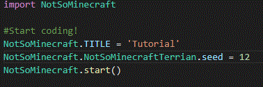And the result is a dessert terrian.
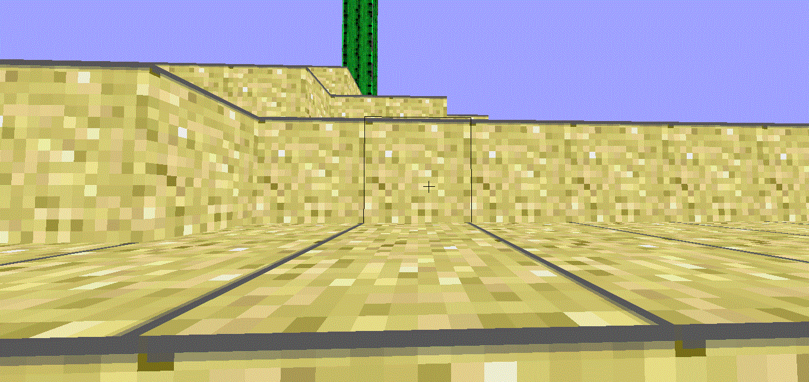If you are running an old computer then you may see failing showing text or issues and crashes. If this occurs then try updating your graphics driver and try again.
I think my walking is too slow so I am going to change it.
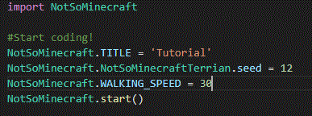Lets run it...
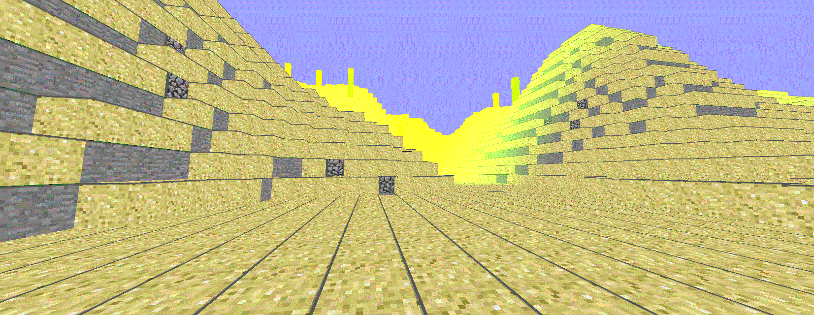AHH! My player is too fast, I think i will go with speed 16.
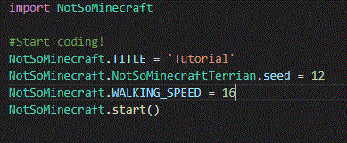I still feel very fast, how about 12?
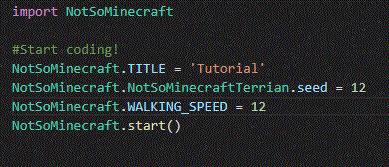Perfect speed, lets turn on RTX mode by pressing RTX ON when we open the program again.
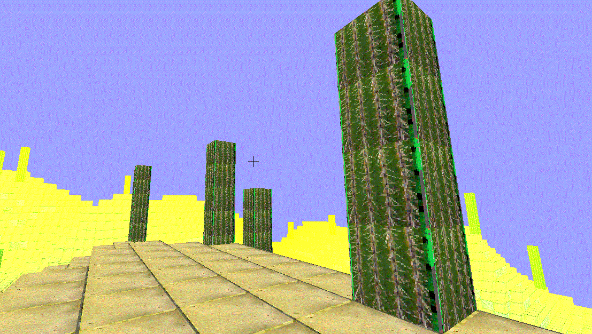Lets change the sprint speed because it feels like the walking speed and the sprint speed are the same.
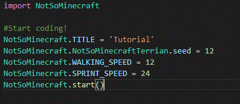Lets also change the flying speed...
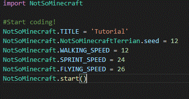Nice, the game works perfectly, goodbye!